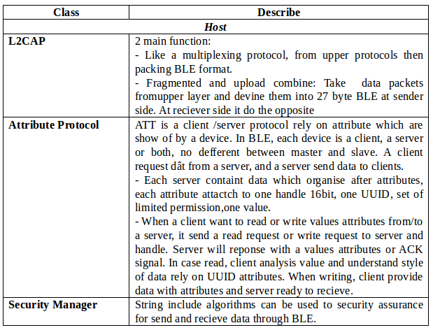
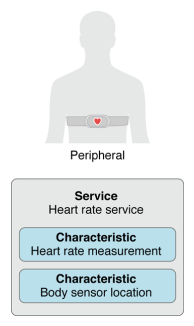
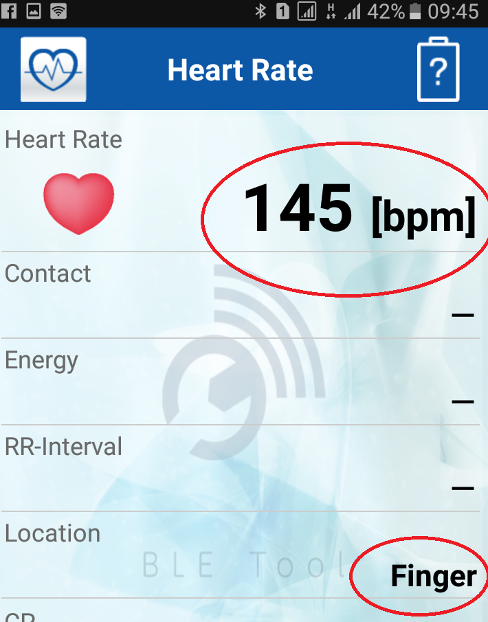

Introduce Bluetooth Low Energy Technology
-
Firstly, BLE is not all, it does not replace completely other wireless communication standards like Wifi, Zigbee, … or even Bluetooth Classic (2.0). It is designed for a more specialized purpose, with a more specific application domain.
-
BLE (Bluetooth 4.0 up) is designed for applications:
+Super energy saving, allowing device active for months or years with just one coin-cell battery;
-
Short distance, stable operation within 10m;
-
Data trafic is not large, suitable for discrete control applications, sensors.
-
-
Typical applications use BLE as health monitoring devices, beacons, smart houses, security, entertainment, proximity sensors, automobiles. The centerpiece of a BLE application system is usually smart phones, tablets and PCs.
History of Bluetooth technology development

VNGIoTLab’s VBLUno51 boards use the Nordic nRF51822 chip, which currently supports the Bluetooth Standard 4.2.
What makes BLE become different?
-
The rapid development of devices led to a sharp increase in the demand of connection between smart devices to external devices. While BLE is integrated in most smartphones.
-
Low cost.
-
BLE allows devices can “talk” to modern mobile platforms.
-
Some devices only need to transmit a small amount of data for each cycle connection and they also need energy savings, such as heart rate monitor, child management devices, etc.
-
BLE has a relatively easy-to-understand data model, without the cost of a license with a protocol stack is not too complex.
Types of Bluetooth devices.
- The Bluetooth Specification (4.0 onwards) defines the following two wireless technologies:
- BR / EDR (Classic Bluetooth)
- BLE (Bluetooth Low Energy)
The most common types of Bluetooth devices today are outlined below:

As the picture above, the BLE device consists of two types: Bluetooth Smart and Bluetooth Smart Ready.
-
Bluetooth Smart (Single mode): Only communicate with Bluetooth Smart or Bluetooth Smart Ready
-
Bluetooth Smart Ready (Dual mode): It can communicate with Bluetooth devices such as Bluetooth Smart, Bluetooth Smart Ready and Classic Bluetooth.
-
nRF51822 chip is Bluetooth Smart.
Main blocks of a Bluetooth device
-
Each Bluetooth device consists of three main blocks:
-
Application: The user application communicates with Bluetooth protocol stack.
-
Host: The upper layer of the Bluetooth protocol stack.
-
Controller: The under layer of the Bluetooth protocol stack, including radio transmitter functionality.
-
(Bluetooth Protocol Stack: The stack protocol allows Bluetooth devices to establish, connect, and transmit data.)
Three main blocks of a Bluetooth device are integrated into the hardware in a variety of different styles, here are three main types of hardware configurations:

Nordic nRF51822 chip is a System on Chip (SoC), Bluetooth components integrated in a single chip.
Main limitations of BLE
- Small data throughput:
Frequency modulation of BLE waves in space is 1Mbps. This is the upper limit of theoretical throughput. However, in reality this parameter is smaller due to the influence of many factors.
To illustrate, we assume that a master device is initialized and connected to a slave via the BLE interface:
-
We have a concept of connection cycles (Conneciton interval), this is the time between two consecutive connection events. With BLE, when a connection event occurs, the devices in the connection exchange the data together, then return to the IDLE state to save energy, and wait until the time to perform next connection event. This parameter is from 7.5ms to 4s.
-
nRF51822 can transmit up to 6 packets per connection event. Each package can contain 20 bytes.
-
Assuming the connection event frequency is the largest (minimum connection cycle = 7.5ms). At that moment, up to 133 connection events can occur per second
–> Throughput calculation formula: 133 * 120 = 15960 bytes / sec (125Kbit / s)
Recommended we should choose throughput of about 80 Kbit/s. This also tells why Wifi, classic bluetooth still have a place.
- Close distance
Factors affecting to distance of communication such as operating environment, antenna design, obstruction, device orientation, etc. BLE focuses on communication applications in close distance.
-
With BLE we have:
-
Theoretical distance: 100m (good condition).
-
Possible distance: 30m.
-
Distance usually used: 2-5m.
-
Network communication model for BLE
A BLE device can communicate with the outside through two mechanisms: Broadcasting or Connection. Each mechanism has its own advantages and limitations, both set by Generic Access Profile (GAP)
Broadcasting và Observing

-
Broadcaster Devices: Sends broadcast packets that are connectionless to any device that can receive them.
-
Observer Devices: Scans continuously at set frequencies to receive connectionless broadcast packets.
This is the type of communication that allows a device to transmit data to multiple devices at one time. This is a fast and easy-to-use mechanism, which is a good option if you want to transfer small amounts of data to multiple devices at the same time. The restriction is that data is not secure, so it is not suitable for transmitting sensitive data.
Connection

-
Central (Master) Device: Scans broadcast packets for connection at set frequencies, when come to appropriate time it will initiates a connection with a peripheral. Central manages timing and initiates cyclical data exchanges.
-
Peripheral device (Slave): Broadcast periodic connection-oriented broadcasts and accept connections requested by central.
-
Connection Initialization:
-
When you want to connect, slave broadcasts packets broadcast to space.
-
Central receives the broadcast packets of slave, which contains the necessary information to allow connection to the slave.
-
Based on that, central sends a request to connect to slave then establish a separate connection between two devices.
-
When the connection is established, slave stops broadcasting and two devices can begin to exchange two-way data. Master and slave roles do not affect data transfer, though Master is the connection manager.
-
-
The advantage of Connection over Broadcasting is:
-
High bandwidth.
-
The ability to establish secure link-link.
-
Optimal energy management.
-
The ability to organize data with multiple conformational changes for attributes through using additional protocol layers, particularly Generic Attribute Profile (GATT). Data is organized in a structured sense around what are called services and characteristics.
-
Protocols and Profiles
In order two devices can communicate with each other through the BLE standard, BLE devices need to comply with some regulations. These rules are generalized into protocols and configurations.
-
Protocol: A set of rules that govern formatting of packets, routing, multiplexing, encryption, etc. to exchange data between sides.
-
Profile: Defining how the protocol is used to achieve specific objectives. There are two types of configurations: generic profiles and use-case profiles.
-
Generic profiles: Base profiles are defined in the Bluetooth Specifications, especially two profiles that are indispensable for BLE devices to connect and exchange data with each other, GAP and GATT.
-
Use-case profile: Profiles for specific use cases
-
Profiles which are defined by Bluetooth Special Interest Group (SIG)
-
Profiles are defined manually by vendor.
-
-
The BLE Protocols Stack
To program BLE devices, it’s possible to just care about API functions in the upper layer of the BLE protocol stack, but it’s better to start with a basic view of interface. This gives BLE, which provides background knowledge to further research into BLE.
The figure below shows the full list of components within BLE suite for the Bluetooth Smart device.

-
The protocol suite for BLE devices is divided into three main parts: controller, host and application. Each section consists of one or more layers according to function:
-
Application: The highest layer of protocols suite, providing a user interface, logical processing, and data control of everything related to the application’s operating instances. The architecture of application depends on specific problem.
-
Host: includes the following classes
-
Generic Access Profile (GAP)
-
Generic Attribute Profile (GATT)
-
Attribute Protocol (ATT)
-
Security Manager (SM)
-
Logical Link Control and Adaptation Protocol (L2CAP)
-
Host Controller Interface (HCI), Host side
-
-
Controller: includes the following classes
-
Host Controller Interface (HCI), Controller side
-
Link Layer (LL)
-
Physical Layer (PHY)
-
-
Table summarizes the functions of classes in stack



In conclution, BLE protocol stack include multiple layers, each layer performs certain functions that facilitate communication between BLE devices.
Base profiles: GAP and GATT
GAP (Advertising and Connections)
-
GAP (Generic Access Profile) is the platform that allows BLE devices to communicate with each other. It provides a framework that any BLE devices must follow to be able to search for other Bluetooth (BLE) devices, broadcast data, establish a secure connection, perform a variety of platform activities under A standard
-
The BLE Specifications document defines the following concepts when considering interactions between devices:
-
Roles: Each device can operate in one or more different roles at the same time: broadcaster, observer, central, peripheral.
-
Modes: A mode is a state in which the device can be moved for a period of time to achieve a specific purpose or special thing, to allow a peer to perform a particular procedure.
-
Procedures: The procedures (usually the link layer that controls the exchange of packets) to allow a device to achieve a certain purpose. A procedure is usually associated with a mode, so mode and procedure are often considered together.
-
Security: GAP builds on Security Manager and Security Manager Protocol (which defines security modes and procedures to determine how devices set security levels when exchanging data). In addition, GAP defines more advanced security features without being associated with specific modes and procedures, enhancing the level of data protection required by each application.
-


GAP is the highest control layer of BLE (Highest Control layer) and is mandatory for all BLE devices.
GATT (Services and Characteristics)
-
GATT set details how to exchange all profiles and user data over a BLE connection. In contrast to GAP (which defines low-level interactions with devices), GATT only demonstrates actual data transmission and formatting procedures.
-
GATT uses ATT and its transmission protocols to exchange data between devices. This data is organized hierarchically into sections called services, which group related conceptual pieces of user data called characteristic. In short, the data transmitted through BLE is structured data, which in particular is organized into services and characteristics.
Roles
-
GATT Client: corresponds to the ATT client, sends the request to the server and receives the response. Initially, the GATT Client did not know what attributes server was supporting so it needed to perform service discovery.
-
GATT Server: corresponds to the ATT server, receives request from the client, and sends the corresponding content.
-
Note that GATT roles do not depend on the role of GAP. This means that both GAP Central and GAP Peripheral can act as GATT Client or GATT Server or even both at the same time.
UUIDs
- UUIDs is a unique 128-bit (16 byte) device identifier in the world. Because the length is too large, BLE Specification defines two more UUIDs: 16bit and 32bit. These short formats may only be used with the UUID defined in the BT Specification.
Attributes
-
Attributes is the smallest data which defined entity by GATT (and ATT).
-
Both GATT and ATT work only with attributes, so for all client and server interactions all data must be organized in this format.
-
Each attribute contains information about itself that is user data and is described as follows:
-
Handle: The only 16 bits per server to address the attribute
-
Type: UUID type, 16bit - 32bit - 128 bit
-
Permission: specifies the ATT opertation that can be executed on a particular attribute
-
Value: Contains the actual data portion of the attribute, 512 byte limit
-
Services and Characteristics
Data exchanged via a BLE connection is structured data, organized hierarchically into services, services themselves including characteristics.

Profiles for each specific application
GAP and GATT are two platform profiles for every BLE applications. In addition, depending on the applications, devices will provide other profiles (based on GAP and GATT). The main services are the services provided by the device such as: Heart Rate Monitor, Battery, Health Thermometer, HID, …
For detailed information about services, visit the following links:
https://www.bluetooth.com/specifications/adopted-specifications https://www.bluetooth.com/specifications/gatt/services.
These links above represent profiles that have been defined by the Bluetooth SIG organization. In addition, device manufacturers can define more profiles themselves.
Example illustrating heart rate monitor (HRM) with the VBLUno51 board on Arduino
- Heart Rate Monitor– HRM
The figure below shows the structure of the Heart Rate Service (HRS)

- We can see, HRS consists of two characteristics that provide information about the heart rate and the location of the sensor on the body. Details can be found at the following link:
https://www.bluetooth.com/specifications/gatt/viewer?attributeXmlFile=org.blueooth.service.heart_rate.xml
-
The following example illustrates a BLE device that measures heart rate and transmits to BLE Central (Smartphones, tablets, PC). Since there are no sensors that support this feature, in this example we just create a dummy signal as described below:
-
The heart rate value varies linearly from 100 to 175 with an increase of 1
-
Position sensor on body: Finger (code = 0x03)
-
-
Perform:
-
Open the HRM example: File => Examples => BLE_Examples => BLE_HRM
-
Compile and upload to VBLUno board. If successful you already have a BLE device that illustrates the heart rate monitor feature.
-
To connect to this device, you need a BLE Central (Smart phone, tablet, PC). Here we use Nordic’s nRF Toolbox software and BLE Tool software to illustrate.
-

On Android phone or iPhone, run the nRF Toolbox, select the HRM entry, click Connect to search the HRM device, and request a connection.



The source code of the example program is quite simple, you can read it yourself and find out.
BLE introduction book
To find out more about BLE you can refer to some of the following materials:
-
Getting started with Bluetooth Low Energy – Tool and techniques for low-power networking của Kevin Townsend, Carles Cufí, Akiba & Robert Davidson.
-
Bluetooth Low Energy – The developer’s handbook, Robin Heydon